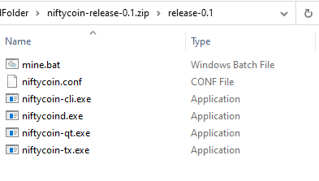
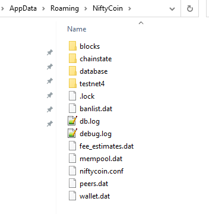
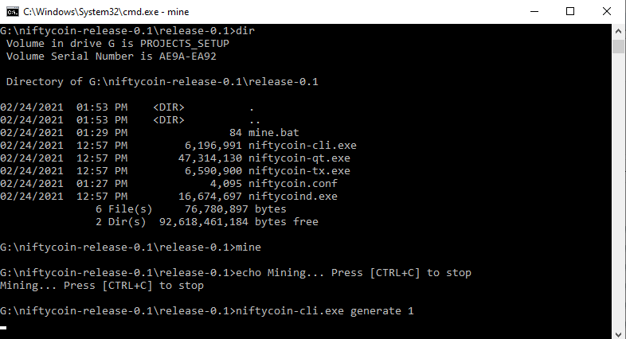
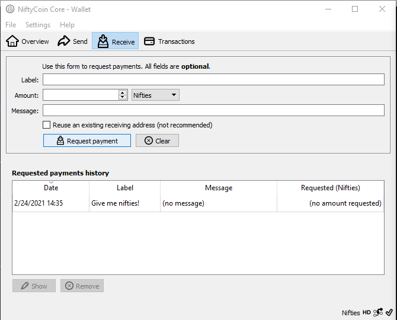
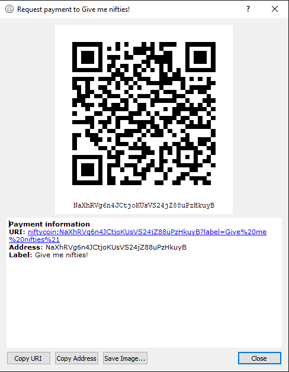

Get Started with Nifties - #NFY
Mining NiftyCoin is fun and easy! In just a few steps, you can start earning #NFY by mining blocks on the niftycoin network!
You may have heard that mining cryptocurrency is a technical process that involves expensive hardware, except this is not necessarily true during the birth of a new blockchain. Since the niftycoin network is very new, the mining difficulty is currently easy enough to successfully mine on most modern CPUs.
It is very possible to mine thousands of #NFY# (Nifties) today while this difficulty remains low.
This article will cover to configuring the niftycoin wallet and mining script on Windows. If you are interested in running on Linux view the notes in the latest release for detailed instructions.
NiftyCoin Explorer
Let’s get started!
- Begin by downloading the latest Windows release of niftycoin.
- Inside the .zip file you will notice the wallet program, niftycoin-qt.exe and a sample configuration name niftycoin.conf

Extract the contents of the .zip to a directory of your choice and run niftycoin-qt.exe.
- You will notice that the application starts up and gives a message that it is attempting to connect to peers, this will not finish successfully until we apply a valid configuration to connect to existing nodes.
- As mentioned in step 1, when niftycoin-qt.exe is first run it will ask you to select a data directory, if you do not change the data directory and use the default settings, it will create a niftycoin directory in %AppData%/niftycoin. We need to navigate to the this directory OR the custom path that you chose on first launch and copy the niftycoin.conf file that was included in the original .zip file. You will know you are in the right place because you should see the following files and folders (with exception of niftycoin.conf).

- Now restart niftycoin-qt and the program will begin to synchronize with the niftycoin network. This can take a long time, please be patient and wait for the process to complete.
- To begin mining on your machine, simply double-click the mine.bat file included in the original .zip. This program and the niftycoin-qt wallet must be open at the same time in order to mine.
If you get lucky, you may start receiving notifications that you successfully mined a block!
(If you get errors you may need to copy niftycoin.conf to %appdata%/niftycoin OR modify mine.bat to use the -datadir parameter and point it at the directory chosen when you first launched the wallet.)

Send and Recieve Nifties!
- To obtain your wallet address, click on the “Receive” option in the niftycoin-qt wallet, the select “Request Payment”:

- A QR code and niftycoin address will appear on the screen, copy the section highlighted in yellow:
